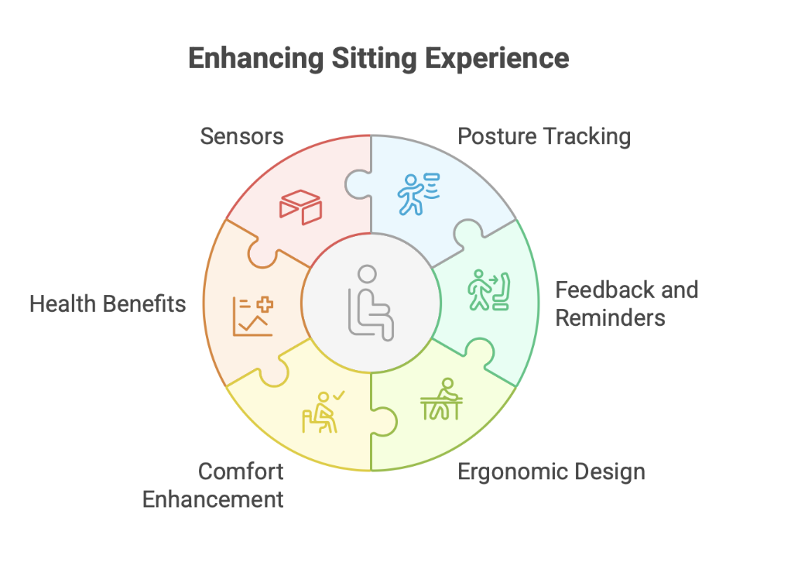
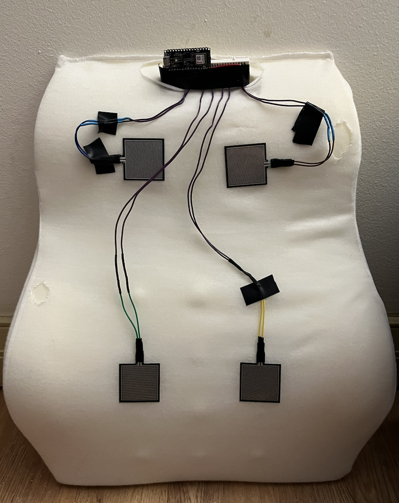
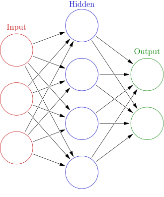
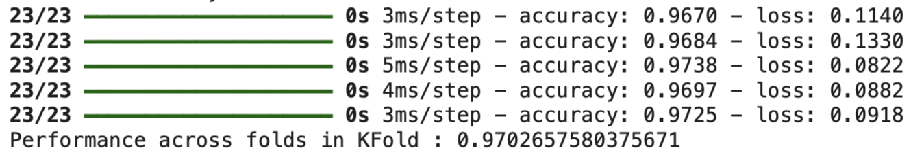

Outcome

The neural network on the cushion makes predictions from incoming sensor data. Depending on the model's prediction, timers for good and bad posture increment accordingly. 0 = Bad, 1 = Good.

Capstone Project
2025 – 2026
Yunhao Dong
Bonnie Wu
Annie Huang
Sharon Chi
Machine Learning
Hardware Planning
Embedded Software
Edge Impulse Research
System Integration
September – May
The majority of the labor force conducts office-like, administrative work — a population that extends to academia, where students spend prolonged durations sitting and studying. Postura is a cushion-like product aimed at helping consumers track their posture through a machine learning model deployed on an embedded system device.
More technical details can be found in the GitHub Repository.

The neural network on the cushion makes predictions from incoming sensor data. Depending on the model's prediction, timers for good and bad posture increment accordingly. 0 = Bad, 1 = Good.

The original project did not start with an embedded machine learning model. After initial testing, the noise present in the sensor readings was not ideal for manual computations, which would also involve a large number of computations given the many ways to achieve good posture.
Some sensors were deemed infeasible and removed after the first iteration (the flex sensor). Accuracy started around 70% and improved to 97% through further feature engineering, value scaling, and adding more layers to the neural network within memory constraints. Additional data samples were also collected to improve the generalizability of the learned weights.

This project allowed me to combine my interest in embedded systems and machine learning into a single product. It was exciting to apply knowledge from my Machine Learning course to improve accuracy — since the entire project depends on whether the model can correctly predict posture status. Professor Fund's ML course greatly helped me understand the foundations of ML.